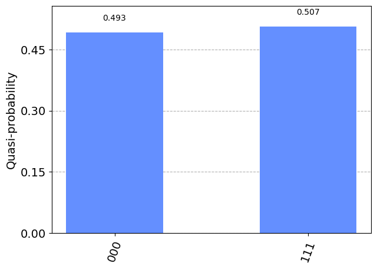
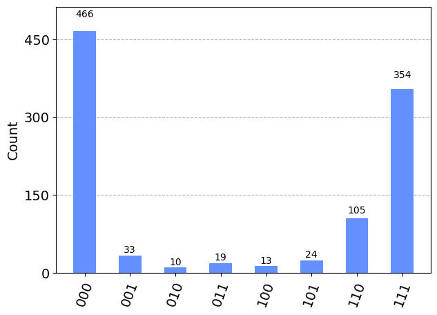
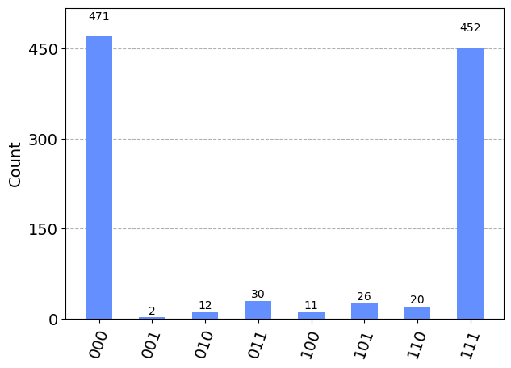

import qiskit
import numpy as np
from qiskit import QuantumCircuit
---------------------------------------------------------------------------
ModuleNotFoundError Traceback (most recent call last)
Cell In[1], line 1
----> 1 import qiskit
2 import numpy as np
3 from qiskit import QuantumCircuit
ModuleNotFoundError: No module named 'qiskit'
# 1. A quantum circuit for preparing the quantum state |000> + i |111>
qc_example = QuantumCircuit(3)
qc_example.h(0) # generate superpostion
qc_example.p(np.pi/2,0) # add quantum phase
qc_example.cx(0,1) # 0th-qubit-Controlled-NOT gate on 1st qubit
qc_example.cx(0,2) # 0th-qubit-Controlled-NOT gate on 2nd qubit
qc_example.draw()
┌───┐┌────────┐
q_0: ┤ H ├┤ P(π/2) ├──■────■──
└───┘└────────┘┌─┴─┐ │
q_1: ───────────────┤ X ├──┼──
└───┘┌─┴─┐
q_2: ────────────────────┤ X ├
└───┘# 2. define the observable to be measured
from qiskit.quantum_info import SparsePauliOp
operator = SparsePauliOp.from_list([("XXY", 1), ("XYX", 1), ("YXX", 1), ("YYY", -1)])
# 3. Execute using the Estimator primitive
from qiskit.primitives import Estimator
estimator = qiskit.primitives.BackendEstimator(FakeManilaV2())
estimator = Estimator()
for s in range(1,101,10):
job = estimator.run(qc_example, operator, shots=s)
result = job.result()
# print(s, f" > Expectation values: {result.values}")
print(s, f" > Expectation values: {result}")
1 > Expectation values: EstimatorResult(values=array([4.00000001]), metadata=[{'variance': 3.552713678800501e-15, 'shots': 1}])
11 > Expectation values: EstimatorResult(values=array([3.99999999]), metadata=[{'variance': 3.552713678800501e-15, 'shots': 11}])
21 > Expectation values: EstimatorResult(values=array([4.00000001]), metadata=[{'variance': 3.552713678800501e-15, 'shots': 21}])
31 > Expectation values: EstimatorResult(values=array([4.00000002]), metadata=[{'variance': 3.552713678800501e-15, 'shots': 31}])
41 > Expectation values: EstimatorResult(values=array([3.99999998]), metadata=[{'variance': 3.552713678800501e-15, 'shots': 41}])
51 > Expectation values: EstimatorResult(values=array([3.99999999]), metadata=[{'variance': 3.552713678800501e-15, 'shots': 51}])
61 > Expectation values: EstimatorResult(values=array([4.]), metadata=[{'variance': 3.552713678800501e-15, 'shots': 61}])
71 > Expectation values: EstimatorResult(values=array([4.]), metadata=[{'variance': 3.552713678800501e-15, 'shots': 71}])
81 > Expectation values: EstimatorResult(values=array([4.00000001]), metadata=[{'variance': 3.552713678800501e-15, 'shots': 81}])
91 > Expectation values: EstimatorResult(values=array([4.]), metadata=[{'variance': 3.552713678800501e-15, 'shots': 91}])
# 3. Execute using the Sampler primitive
from qiskit.primitives.sampler import Sampler
# , BackendSampler
sampler = Sampler()
job = sampler.run(qc_measured, shots=2000)
result = job.result()
print(f" > Quasi probability distribution: {result.quasi_dists}")
> Quasi probability distribution: [{0: 0.493, 7: 0.507}]
Sampler#
# 2. Add the classical output in the form of measurement of all qubits
qc_measured = qc_example.measure_all(inplace=False)
qc_measured.draw()
┌───┐┌────────┐ ░ ┌─┐
q_0: ┤ H ├┤ P(π/2) ├──■────■───░─┤M├──────
└───┘└────────┘┌─┴─┐ │ ░ └╥┘┌─┐
q_1: ───────────────┤ X ├──┼───░──╫─┤M├───
└───┘┌─┴─┐ ░ ║ └╥┘┌─┐
q_2: ────────────────────┤ X ├─░──╫──╫─┤M├
└───┘ ░ ║ ║ └╥┘
meas: 3/═════════════════════════════╩══╩══╩═
0 1 2 from qiskit.visualization import plot_histogram
statistics = result.quasi_dists[0].binary_probabilities()
display(plot_histogram(statistics))

import qiskit.primitives
from qiskit.providers.fake_provider import *
sampler = qiskit.primitives.BackendSampler(FakeManilaV2())
# sampler = qiskit.primitives.sampler.Sampler()
job = sampler.run(qc_measured, shots=1000)
result = job.result()
print(f" > Quasi probability distribution: {result.quasi_dists}")
statistics = result.quasi_dists[0].binary_probabilities()
display(plot_histogram(statistics))
> Quasi probability distribution: [{1: 0.003, 4: 0.011, 6: 0.014, 5: 0.022, 2: 0.018, 0: 0.5, 3: 0.017, 7: 0.415}]
Estimator#
# 2. define the observable to be measured
from qiskit.quantum_info import SparsePauliOp
operator = SparsePauliOp.from_list([("XXY", 1), ("XYX", 1), ("YXX", 1), ("YYY", -1)])
# 3. Execute using the Estimator primitive
from qiskit.primitives import Estimator
estimator = Estimator()
job = estimator.run(qc_example, operator, shots=1)
result = job.result()
print(f" > Expectation values: {result.values}")
result
job = estimator.run(qc_example, operator, shots=1000)
result = job.result()
print(f" > Expectation values: {result.values}")
result
> Expectation values: [4.00000004]
> Expectation values: [4.]
EstimatorResult(values=array([4.]), metadata=[{'variance': 3.552713678800501e-15, 'shots': 1000}])
result
EstimatorResult(values=array([4.]), metadata=[{'variance': 3.552713678800501e-15, 'shots': 1000}])
from qiskit.quantum_info import Operator
# Create a Quantum Circuit acting on a quantum register of three qubits
circ = QuantumCircuit(3)
# Add a H gate on qubit 0, putting this qubit in superposition.
circ.h(0)
# Add a CX (CNOT) gate on control qubit 0 and target qubit 1, putting
# the qubits in a Bell state.
circ.cx(0, 1)
# Add a CX (CNOT) gate on control qubit 0 and target qubit 2, putting
# the qubits in a GHZ state.
circ.cx(0, 2)
circ.draw()
U = Operator(circ)
# Show the results
U.data
array([[ 0.70710678+0.j, 0.70710678+0.j, 0. +0.j,
0. +0.j, 0. +0.j, 0. +0.j,
0. +0.j, 0. +0.j],
[ 0. +0.j, 0. +0.j, 0. +0.j,
0. +0.j, 0. +0.j, 0. +0.j,
0.70710678+0.j, -0.70710678+0.j],
[ 0. +0.j, 0. +0.j, 0.70710678+0.j,
0.70710678+0.j, 0. +0.j, 0. +0.j,
0. +0.j, 0. +0.j],
[ 0. +0.j, 0. +0.j, 0. +0.j,
0. +0.j, 0.70710678+0.j, -0.70710678+0.j,
0. +0.j, 0. +0.j],
[ 0. +0.j, 0. +0.j, 0. +0.j,
0. +0.j, 0.70710678+0.j, 0.70710678+0.j,
0. +0.j, 0. +0.j],
[ 0. +0.j, 0. +0.j, 0.70710678+0.j,
-0.70710678+0.j, 0. +0.j, 0. +0.j,
0. +0.j, 0. +0.j],
[ 0. +0.j, 0. +0.j, 0. +0.j,
0. +0.j, 0. +0.j, 0. +0.j,
0.70710678+0.j, 0.70710678+0.j],
[ 0.70710678+0.j, -0.70710678+0.j, 0. +0.j,
0. +0.j, 0. +0.j, 0. +0.j,
0. +0.j, 0. +0.j]])
# Create a Quantum Circuit
meas = QuantumCircuit(3, 3)
meas.barrier(range(3))
# map the quantum measurement to the classical bits
meas.measure(range(3), range(3))
# The Qiskit circuit object supports composition.
# Here the meas has to be first and front=True (putting it before)
# as compose must put a smaller circuit into a larger one.
qc = meas.compose(circ, range(3), front=True)
#drawing the circuit
qc.draw()
# Adding the transpiler to reduce the circuit to QASM instructions
# supported by the backend
from qiskit import transpile
# Use AerSimulator
from qiskit_aer import AerSimulator
backend = AerSimulator()
# First we have to transpile the quantum circuit
# to the low-level QASM instructions used by the
# backend
qc_compiled = transpile(qc, backend)
# Execute the circuit on the qasm simulator.
# We've set the number of repeats of the circuit
# to be 1024, which is the default.
job_sim = backend.run(qc_compiled, shots=1024)
# Grab the results from the job.
result_sim = job_sim.result()
# from qiskit import BasicAer
# backend = BasicAer.get_backend('qasm_simulator')
# Get a fake backend from the fake provider
backend = FakeManilaV2()
# backend= FakeAuckland()
# backend = AerSimulator()
job = backend.run(circuit)
counts = job.result().get_counts()
plot_histogram(counts)

from qiskit import transpile
# Transpile the ideal circuit to a circuit that can be directly executed by the backend
transpiled_circuit = transpile(circuit, backend)
transpiled_circuit.draw()
global phase: π/4
»
ancilla_0 -> 0 ────────────────────────────────────────────────────»
»
ancilla_1 -> 1 ────────────────────────────────────────────────────»
┌───┐┌─────────────────┐»
q_1 -> 2 ────────────────────────────┤ X ├┤ Delay(4800[dt]) ├»
┌─────────┐┌────┐┌─────────┐└─┬─┘└─────────────────┘»
q_0 -> 3 ┤ Rz(π/2) ├┤ √X ├┤ Rz(π/2) ├──■───────────■─────────»
└─────────┘└────┘└─────────┘ ┌─┴─┐ »
q_2 -> 4 ────────────────────────────────────────┤ X ├───────»
└───┘ »
meas: 3/════════════════════════════════════════════════════»
»
«
«ancilla_0 -> 0 ───────────────────────────────
«
«ancilla_1 -> 1 ───────────────────────────────
« ░ ┌─┐
« q_1 -> 2 ────────────────────░────┤M├───
« ┌─────────────────┐ ░ ┌─┐└╥┘
« q_0 -> 3 ┤ Delay(4800[dt]) ├─░─┤M├─╫────
« ├─────────────────┤ ░ └╥┘ ║ ┌─┐
« q_2 -> 4 ┤ Delay(4800[dt]) ├─░──╫──╫─┤M├
« └─────────────────┘ ░ ║ ║ └╥┘
« meas: 3/═══════════════════════╩══╩══╩═
« 0 1 2
# Run the transpiled circuit using the simulated fake backend
job = backend.run(transpiled_circuit)
counts = job.result().get_counts()
plot_histogram(counts)

AER#
import qiskit
from qiskit_aer import AerSimulator
from qiskit.providers.fake_provider import *
# Generate 3-qubit GHZ state
circ = qiskit.QuantumCircuit(3)
circ.h(0)
circ.cx(0, 1)
circ.cx(1, 2)
circ.measure_all()
# Construct an ideal simulator
aersim = AerSimulator()
# Perform an ideal simulation
result_ideal = aersim.run(circ).result()
counts_ideal = result_ideal.get_counts(0)
print('Counts(ideal):', counts_ideal)
# Counts(ideal): {'000': 493, '111': 531}
# Construct a noisy simulator backend from an IBMQ backend
# This simulator backend will be automatically configured
# using the device configuration and noise model
backend = FakeCairo()
# aersim_backend = AerSimulator.from_backend(backend)
aersim_backend = FakeManilaV2()
# Perform noisy simulation
result_noise = aersim_backend.run(circ).result()
counts_noise = result_noise.get_counts(0)
print('Counts(noise):', counts_noise)
# Counts(noise): {'101': 16, '110': 48, '100': 7, '001': 31, '010': 7, '000': 464, '011': 15, '111': 436}
Counts(ideal): {'000': 485, '111': 539}
Counts(noise): {'001': 32, '110': 109, '100': 20, '011': 16, '111': 370, '010': 11, '000': 449, '101': 17}